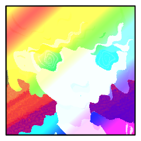
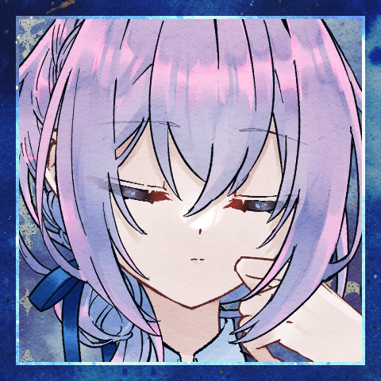
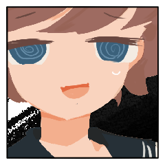

◆お茶会
お茶会シーン1 行動：チバ
GM
どういうふうにしますか？ もてなされはスキップしてしまいますか？
チバ
流れで……当たって行きます 表振って行きますね
GM
1 村の入り口。粗末ながら見張り台が立っており、村の内外を見渡せる。
GM
栄えた村、というわけではないんですが、まあまあ活気が満ちたふうです。
GM
エールにまとわりつく子兎たちもいれば、今も何やら仕事をしている兎たちもいる。
GM
先の出来事を思えば、それすら疑って然るべき、と考えてしまわざるを得ないのだが。
チバ
村の入り口から外の方を見返した。
荒野が見えるような、このまま逃げ出したくなるような。
実際にマジで誰かが居る、敵対するかも、
ってなると、活躍しようとかやってやろう！とか。
そういうのじゃなくて逃げたくなるんだよな。
「エールさん。村の外ってどうなってんですか」
村長に案内してもらっている村人の気分だ。何か。
エール
「荒野だねえ。
このあたりは、どうにも、ものが少ないから」
兎にせがまれて手を繋いでやっている。
エール
「あまり救世主も来ない。
こんな風に、連日で来られるのは、珍しいことだ」
チバ
来ないんだ。来ないなら稼ぐの大変だろうな。
来ないってことはあの兎、罠か？
「兎たちに呼び込ませてる、とかなんですか？」
今、俺たちのこと罠にかけてますか？
俺、罠にかかってます？
「まあ、なんか。普通にもてなされてちょっと肩透かしなんですけど」
エール
「あの子がそのように、望んだから」
振り返る。チバを。
その先、さらに後ろにいる、あなたを導いた白兎を。
「わたしは、あの子がかわいい。あの子たちがかわいい。
望みをかなえてあげたくなる」
エール
救世主が穏やかに答える一方で、兎たちの活気の声が響く。
チバ
あー。煙に巻かれている。兎たちがやりたがってるんです？
自分の意志は関係ないってか。本当にんなわけあるか？
煙に巻かれている。
そう、多淵さんとかクラレさんがよくやるやつ。
素直にそうですとか、はいとか言わない。
言葉として言っててもそれは表面的な話で、俺が見たい真実とか。
そういうのを遠ざけて簡単な話で誤魔化す。
「率直に聞きますけど」
エール
一度足を止めて、改めてチバを見る。
それからクラレットとラサの二人をも。
エール
「"おもてなし"の前には、聞いておきたい？」
エール
みなさまお腹を空かせているのだと思ったけれど、と、首を傾ぐ。
チバ
だってそうだろ。
優しそうなヤツの事ぶん殴るの躊躇うだろ。
悪い奴であれよ。せめて。
チバ
クソ、悩むなよ。高笑いしてそうだよ悪い奴ですって言えよ。
調子狂うな。今日相手にした奴の事を思い出す。
そういえば最初から襲い掛かって来た気がする。
「騙されてそうだったら飯食うの躊躇うでしょ……」
「エールさん的には違うんですか」
エール
「あとから知ったら騙されたにはなるかも、というか」
エール
ねえ、と、子兎に同意を求め。
んー？ と子兎は小首をかしげ。
GM
ねー！ と兎同士頷き合い、笑い合って駆けていく。
チバ
長閑だ。信じがたいほどに。
ここまで長閑だと自分の方がおかしいような気がしてくる。
いや。俺は普通だ。それは間違いない。
GM
少し前までいた荒野の、厳しい風の吹き付けるさまが、幻であったかのように。
チバ
「ただ。やっぱ俺はあんたのこと信用は出来ませんよ」
線を引く。
呑まれるな。
ペースを維持。
平常心を保とう。
罠に違いない。
間違いない。
決めつけ。
「飯は要らないです。あんたに施される気はないです」
チバ
騙されていると思う。
才覚の影を疑う。
お前、嘘ついてるんだろ。
チバ
「見てる。
監視する。
お前が多淵さんとかクラレさんに危害を加えないか」
「やったら殴る」
チバ
「俺はやると思ってる」
「普通、急にもてなすようなヤツ居ないでしょ」
チバ
やっぱりそうだ。
裏があるんだ。こいつも。
俺は騙されない。普通に考えれば。
普通に考えれば正解はわかるはずなんだ。
▷才覚を猟奇で判定して抉ります。
エール
Choice[猟奇,才覚,愛] (choice[猟奇,才覚,愛]) ＞ 愛
エール
2d6+4=>7 判定（＋愛） (2D6+4>=7) ＞ 7[4,3]+4 ＞ 11 ＞ 成功
エール
＊使うか。ヤリイカエリート使用。
合計-8で。
[ エール ] ヤリイカエリート : 2 → 1
[ チバ ] ティーセット : 1 → 0
[ エール ] HP : 25 → 24
チバ
2d6+4+2-8=>7 判定（＋猟奇） (2D6+4+2-8>=7) ＞ 5[4,1]+4+2-8 ＞ 3 ＞ 失敗
エール
まあ、でも、惑うでもなく。傷つくでもなく。
ボロボロの姿はなのは元からで。
あなたへと向ける視線は、あくまでもどこまでも、フラットで。
エール
普通のものを見るのと同じ、そういう眼差し。
エール
「救世主さま……ああ、ええと」
ない方がいいんだっけ。さまは。
そういう風に思い出すように、それも自然体に。
エール
「救世主をもてなそうとした時のリアクションは、大きく分けるとふたつあって」
エール
どこか間の抜けた雰囲気をそのままに。
あなたの探る策謀の気配はどこにもなく。
エール
ただこの状況を一般化して、通常の一幕として収めてしまう。
エール
「今のチバくんのように、あからさまに疑いをかけてくる者」
エール
「とりあえずは流れに従って、差し出された利益だけは享受する者」
エール
「だいたいその２パターンで……あ、たまに、全然疑わない救世主もいるか……」
チバ
結局。
多分俺はテロリストが教室に来てもこんな風だ。
状況に呑まれている。空気を読んでしまっている。
エール
救世主同士。
いつかの殺し合いが定められた者同士。
その間に流れる空気としては、安穏としすぎている。
チバ
何か始まるんだから先手を取って、先読みして。
何か流れを変えようと動いたところで。
最初からそれすらも織り込み済みの範囲だ。
既視感を打ち破ろうとして変な行動をとったのに、
既視感が破られた先に向かっては進めない。
既視感の中にからめとられている。
「……」
じゃあ更に、常識はずれになるしかないのか？
「ならどっちもやる。飯は食います」
エール
「そう。良かった」
すこし安心したように笑った。
その安堵がどこから来るものか。
あなたに推し量れるものかは分からないけれど。
エール
「騙したとかになるのは良くないし、言っておいた方がいいのかな」
チバ
「言わなくていいです」
遮った。もう被害者ぶるしかないんだから。
エール
「……二人は？」
クラレットとラサを見ます。
チバ
「二人に直接聞いて下さいよ……
多淵さんとクラレさんのこと俺よくわかんないんで」
エール
「じゃあ、振る舞う前に訊く……そうするときみの耳にも入ってしまうか……」
チバ
「監視は続けますけど」
言いつつ進んだ。2人はどうするつもりなんだ。この状況。
〆
お茶会シーン2 行動：ラサ
ラサ
どうしようかな。シーンとしてはチバとエールから離れてクラレットと二人で話す感じにしたいです。
GM
村はまあまあ活気があります。
堕落の国にしては、ですが。
栄えているという感じではないけれど、生活の気配がある。
ラサ
「一見して、みな充足を感じているように見える」

ラサ
「しかし……君たちは騙されている！！！！！！！！！！」
ラサ
手近な末裔に絡んで根拠のないことを言っている。
ラサ
「そうだ。こんな場所が堕落の国にあるというのがそもそも不自然なんだ」
ラサ
「救世主というのは基本、何かを企んでいる邪悪な存在だからね」
ラサ
「何か政府[？]や闇の組織[？]と黒い地下水脈が流れ、利益を享受しているに違いない……」
ラサ
「君はわかるよね？ クラレット」わかるということにしようとしている。
クラレット
「あの救世主も何かの目的があってこの村を経営していると」
クラレット
「そして利益を回収している。どこかから」

クラレット
「決して親切だけでしていることではないだろう、と言いたいのね。ラサは」
ラサ
どのような利益かはわからないが、何かがあるに違いない！
ブランチ
「なら簡単さあ」合点が言ったように手を合わせて。
ブランチ
「愛してくれてるから、してくれてるの！」
ラサ
何が面白いのかひとりでけたけたと笑っている。
ブランチ
けたけたと笑うラサに、同じように笑いを返して。
ブランチ
「それで、今が、こう！」ぱ、と腕をひらく。
ラサ
口元だけを笑いの形にしたままクラレットを向いた。
クラレット
救世主エールは愛のためにこうして慈善事業をしているのかどうか。
クラレット
「……信じなくもない。愛でなせることもある」
ラサ
「まあ、仮に、仮に……何かを救いうる偽りのない愛があるとして……“ここ”がそうだとはボクは思わないけどね」
ラサ
「救世主というのは、死か狂気によって約束を違えることが定められている存在だから」
ラサ
「いずれ失われることが約束される愛は、無責任なまぼろしと言ってもいいんじゃないか？」
ラサ
「ボクこそが永遠不滅の真実！！！！！！！！！！！！」
ラサ
「それ以外はぜーんぶ偽物！！！！！！！！！！」
クラレット
「ラサが本当の救世主ならそうなのかも」

ラサ
ハハハハ……ハァ……（笑い疲れた）
ラサ
「自明のものをわざわざ確認する作業だ。冗長で嫌になるね」
ラサ
「このボクがいる限り、少なくとも不確かでないものについて苦悩する必要がないのだから！」
クラレット
「そうね。ラサが本物の救世主なら、最後まで着いていけば間違いないわ」
ラサ
というわけで判定しようかな。何を舐めるんだ？
ラサ
これどっちも舐められそうじゃないっすか？どう？
エール
Choice[猟奇,才覚,愛] (choice[猟奇,才覚,愛]) ＞ 才覚
[ エール ] HP : 24 → 23
[ エール ] ティーセット : 3 → 2
エール
2d6+0+2=>7 判定（＋才覚）+ティーセット (2D6+0+2>=7) ＞ 3[1,2]+0+2 ＞ 5 ＞ 失敗
ラサ
こういう、大仰でセンセーショナルな物言いをすることで相手を物語に取り込むのが陰謀家のやり口なんだよ。今日はそれを覚えて帰ろうね。愛で判定します。
ラサ
2d6+0=>7 判定（＋愛） (2D6+0>=7) ＞ 6[5,1]+0 ＞ 6 ＞ 失敗
ラサ
永遠不変の真実の体現たるボクの言葉に何かしら感銘を受けたり受けなかったりしていただくか。
クラレット
なるほど、こうして連れ立っていれば安心なのだろう。
クラレット
あたしも、正しい側に立てるということで。
それはとても好都合だった。
クラレット
大人しくしているだけで物事が進むのはありがたいわ。
[ クラレット ] 賢しらな瞳 : 0 → 1
お茶会シーン3 行動：エール(1回目)
GM
もてなしの場へと案内されるため、活気ある村を歩く最中に。
ジンジャー
釣られたように飛び出した兎が一匹、転がったその背にもう一撃。
メル
「ジンジャー！」
唯一、白兎だけが慌てて一匹の腕を掴んだ。
GM
興奮気味の兎たちが、襤褸を纏った救世主へと群がりゆく。
GM
髪を掴んでは皮膚を齧り、布切れを引き裂いて。
ジンジャー
「なんにもいいことないのに、こんなにしてくれるなんて」
チバ
どうなるんだ。固唾を飲んで見守る。
何かあってからやればいいんだ。
何かがあるまでは、待ってればいい。
GM
少なくとも彼らにとっては、”何か”ではない。
GM
村の活気はそのままに。
お祭り騒ぎの狂乱が。
のめやうたえと言わんばかり。
メル
「ずっと前、とうに前に。
さっきまでのあなたたちのように、あの人を、疑った」
ジンジャー
「調子に乗ったんだ、ぼくたち。正しくは」
ジンジャー
「なんでも許してくれる！
なんでも受け入れてくれる！
なんでも愛してくれる！」
ブランチ
「こんなにも認めてくれて、こんなにも愛してくれて」
ブランチ
「こんなにも、与えてもらえることなんて」
ブランチ
「ぼくたち、ぜんぜん、知らなかったのだもの」
メル
「喰らい、貪り尽くし、果てなく求めては、飽きもせず」
メル
救世主たちを振り返る。
血の匂いが風に乗って漂う。
メル
「ぼくたちのお願いを、聞いてほしいと申し上げました」
メル
「……その内容を、聞き届けてはくださいますか」
ラサ
「どうするもなにも、すでに後戻りできないところまで来ていないかい？」
クラレット
「手短に。それからこの不愉快な宴を即刻取りやめて」
メル
「ぼくたちは、もう、駄目だから。
あのひとを喰らい尽くすことしか、できないから」
ジンジャー
「でもね、愛してるんだよ！
いっぱいいっぱい愛してくれたから、
ぼくたち、試したくせ、あのひとを愛してるの！」
ブランチ
「でも、たぶん……止まれないから。
止められないから。
同じくらい力のある、救世主さまじゃあないと、きっと」
GM
殴打の音は止み、けれど、狂喜の声ばかりはずっと続いている。
エール
血塗れ泥まみれに、折れた腕で兎たちの頭を撫でている。
その腕の中、守り切った幼い兎を抱いて。
GM
手を血で濡らした兎の一匹がその子兎を受け取って、抱きかかえる。
びっくりしたねえ、なんてあやしてあげて。
クラレット
「……殴って引き摺ってでも連れ出せということね」
チバ
ゲームで見たことがある。
多分これは、こっちがはいと言うまで終わらない選択肢だ。
嫌だな。ああ。
ラサ
「とんだ慈善事業を頼まれたものだね。まさに救世主というわけだ」
ジンジャー
「こんなお願いバレちゃったら、警戒されちゃうからさ」
メル
「他の兎たちは、誰もそんな事考えてません。
……ぼくたちだけです。これを望んでいるのは」
ジンジャー
少なくとも、かれらの中ではそうであるらしい。
ブランチ
愛に侵され、愛に溺れ、愛に喘ぐかれらの中には。
メル
それが真実として、呪いのように横たわっている。
エール
その愛を振り撒いた救世主は、最低限ばかり自分の傷を癒して。
エール
＊行けそうなのでこのまま行くか。
クラレットの心の疵『愛の奴隷』を愛で抉ります。
ラサ
Choice[猟奇,才覚,愛] (choice[猟奇,才覚,愛]) ＞ 才覚
[ ラサ ] ティー : 1 → 0
ラサ
2d6+2+2=>7 判定（＋才覚） (2D6+2+2>=7) ＞ 5[1,4]+2+2 ＞ 9 ＞ 成功
エール
2d6+4+2-6-2=>7 判定（＋愛） ティーセット (2D6+4+2-6-2>=7) ＞ 5[2,3]+4+2-6-2 ＞ 3 ＞ 失敗
[ ラサ ] ヤリイカ : 1 → 0
[ ラサ ] HP : 21 → 20
[ エール ] ティーセット : 2 → 1
ラサ
「こんな藁に縋るような愚かな行為を、愛などという崇高そうな言葉で糊塗しないでもらいたいものだね」
ラサ
「ま、それはそれとしてこの事態をどうにかすることには、反対はしないな」
メル
頭を垂れている。
あなたがたに縋るよりほかない末裔たちに、もはや反駁のすべはない。
クラレット
「なんとかなるか分からないけど、まあ……」
ラサ
「結果としてはそうなる。任せ給え、哀れなものどもよ」
GM
狂乱も流石になりをひそめ、程よく賑やかな村が戻り。
エール
身体を治した救世主も立ち上がって、あなたたちへと視線をくれる。
エール
何もなかったかのように、兎と手を繋ぎ、兎に手を引かれて歩く。
お茶会シーン4 行動：クラレット
クラレット
シチュエーションはなんでも行ける気がしています。シーン表振らせてもらおうかな。
GM
12 村はずれ。整備されていない道が続いている。
クラレット
ハアハアびっくりした 12だからエッチなシーンかと思った（DoA公式シーン表にそういうのがある）
GM
元気だったねえ、って感じで道が荒れているのかもしれません。
GM
今はちょっと落ち着いて、エールに引っ付いて回ったり、村のお仕事をしたりなど。
ブランチ
我に返ると痛そうだったかも～っておもう。
クラレット
まあ、なんか適当な並びで歩いてたらチバくんの隣くらいに居るかも。
チバ
「いや。……」
「…………いや、別に。その。」
マズい。女子と何話すのが正解なんだ？
俺はクラスの女子とは一定の距離を保っている。
クラレさんも多淵さんもスルーしてるけど、あれだぞ。
俺も健全な男子高校生だぞ。
なんとか思えよ。おかしいだろッ。俺がおかしいのか？
クラレット
「良いか良くないかでいえば、あたしとラサにとっては良いことよ」
クラレット
「男手が居ないのは厳しいし。
あたしもラサも裁判で決定打を与えるのは難しい」
チバ
「実利なんですね」
「あっ……はい……いや、別に……何か期待してたとかじゃないんですけど」
チバ
クッソ～何か意識しろよ。
俺ばっかり緊張してるだろ。
「クラレさん……は、最終的に俺たちとも殺……うーん。
やり合うのどう思ってるんですか」
クラレット
「さあ……仕方のないことじゃない？
一緒に居る利益もなくなったのなら別れるなり排除するなりするのが当然でしょう」
クラレット
「少なくとも今すぐには敵対しなさそうで良かったわ」
チバ
言うんじゃなかったという顔。
悪だくみに不向きすぎる。
クラレット
「それとも、感情的な不利益より優先されるものがある？」
クラレット
できることはあるでしょう、と目が笑っている。
チバ
「……今すぐ殺したいと思ってるなら。
俺はクラレさんの首絞めるくらいは出来……」
出来るのか？
チバ
いや、何かやられないと厳しい。
状況に対してリアクションする以上の事は大変だ。
エスカレーターの上に立っていて、
上に行くか、
下に行くか。
それに何か返す位しか。気力がない。
クラレット
「優しいのね。この国じゃ苦労するわよ」
クラレット
「さあ……暴力と殺戮がより近い選択肢になったのは少し苦労しているかもね。あまりその力はないから」
チバ
「さあって……」
まあ、流されるのが好きなのは俺もか。
俺もだな。うーん大変だ。指導している風景を見ている。
学校っぽいな。いや、学校はあんな堂々とした教え方はしない。
クラレット
「回答を訂正しましょうか。今の方が楽かも」
クラレット
「元の世界では何の力も持たなかった。現状に流されるしかなかったし、逃げる力もなかった」
クラレット
「今は六ペンスコインの力があるだけましだわ。この国の残り少ない不思議《ワンダー》はあたしに味方してくれている」
チバ
「思ってたのよりは。やだなあと思っています」
チバ
「クラスに急にテロリストが来た時、俺は多分ぼーっとしてそのまま死にます」
「多分今も、人質に取られたら抵抗するくらいは出来ると思いますけど」
チバ
「球が顔の前に来るまで、やる気が無い。半端なんですよね」
クラレット
「でも、その半端で十分ここまでは来れる」
チバ
顔可愛いしな。
いや、それは関係ない。本当に。無いから。
クラレット
「調子に乗ってもらわないと困るわ。あなたがあたしたち三人の要なんだから」
クラレット
＊そろそろ判定するか。チバの「青春」を才覚で抉ります。
エール
Choice[猟奇,才覚,愛] (choice[猟奇,才覚,愛]) ＞ 才覚
エール
2d6+0=>7 判定（＋才覚） (2D6+0>=7) ＞ 7[6,1]+0 ＞ 7 ＞ 成功
[ エール ] HP : 23 → 22
[ エール ] ヤリイカエリート : 1 → 0
[ クラレット ] ティーセット : 1 → 0
クラレット
2d6+4-5+2=>7 判定（＋才覚－横槍＋ティーセット） (2D6+4-5+2>=7) ＞ 8[5,3]+4-5+2 ＞ 9 ＞ 成功
[ チバ ] 青春 : 0 → 1
クラレット
「今回のことが終わったら、少し、息抜きでもしましょうか」
チバ
息抜きって、な、なんだ。
何だ。息抜きって。食事？いや、食事なら食事で良いだろ。
意図が読めない。いや、雰囲気を読め。空気を読め青山千葉。
女子がこんな距離近づけて来るって事は事だろ。
いや。無いな。無いよ。近っ、待った。待て。
チバ
「頑張りは、しますよ」
後退しようとしてのけ反った。情けない動きを晒した。
チバ
やり過ごせた。何なんだよ本当に。
「多淵さんの授業も……そろそろ終わりそうですかね」
GM
うさぎたちはいつの間にか勝手に合唱めいたものを始めています。
クラレット
故郷に残してきたきょうだいたちを思い出している。
クラレット
きょうだいっていうか、こどもたちっていうか。
チバ
ただ、クラスにこういう女子達が居たら。
俺もちょっと楽しかったのかなと思った。
普通に恋愛して普通にクラスが変わって、
進路を決めて、どうでもいい放課後を過ごして。
単に関心が無かっただけなのかもしれないな。
もう少し、クラレさんと多淵さんと仲良くして良いのかもしれない。
ちょっとくらいはそんな青写真を描いても良いだろう。
勝手に青春の一ページに二人の姿を描いた。
俺の妄想の中でならいいだろ。バレないし。
お茶会シーン5 行動：エール
GM
荒れた道を踏みしめ歩き、あばら家よりは少しばかり上等といった建物へ。
GM
そこではうさぎたちが思い思いに食卓の準備をしており……
GM
まあ、あまり統制の取れた動きではないんですが。
メル
ひときわ真面目な兎が一匹おりますので。
それなりの体裁は整えられております。
GM
粗末ながらに野菜と肉の塊の入ったスープ。
それと硬そうではあるものの、この国にしては大きなパン。
エール
言葉が途中で詰まって、あ、という顔。
チバを見てどうにもむずかしそうな色。
エール
「いや……うーん。どうしよう。
聞きたくないんだったっけ。きみは……」
エール
先に交わした会話を思い出して、むずかしくなっているようです。
チバ
クソ、何だよその困ったような顔は。
やりづらいだろうが……。
「いやっ……まあ、ええ……やるだけどうぞ……」
エール
「ううんと……じゃあ」救世主たちを見回して。
エール
用意されたそれらを手のひらで指し示しながら、
エール
「残していただいても。
うさぎたちの、誰かは食べるよ」
エール
「パンには、そういうものが入っていないし」
ラサ
「ハンバーグに糞が混ざっている、みたいな話をされるぐらいには嫌だな……」
クラレット
「別にハンバーグに糞が多少混ざっていても……そのくらいなら……」
ブランチ
「でも、後から知って、すごーく嫌な気分になった！ って救世主さまもいるからさ」
ラサ
「死体を捌いて加工した肉に、別に抵抗は感じないのに……」
ラサ
「ここにいる誰かさんの腹からひり出されたものって考えると、途端に食欲が失せる」
チバ
「生産者の顔が載ってるヤツも俺は結構ヤです」
ラサ
「そもそも、“敵”に出された食事に手を付けたくないね」
ラサ
「入ってるのが糞だろうが赤子だろうがとびっきりの愛情だろうが……」
ジンジャー
「ぼくには、むずかしいなあ」腕を組んで考える仕草。
ジンジャー
「"味方"からなら、なんだって毒じゃない？」
ブランチ
たべてもらえたらうれしいよ～。という顔。
ジンジャー
「ぼくも、そこが気になった」頷いている。
クラレット
「一時的に味方する、ということはあるんじゃない？」
クラレット
「永遠の味方はあり得ないかもしれないけど……」
チバ
「俺としては、多少は長く味方で居たいですけど……」
ラサ
「なんだその笑い方は……。馬鹿にしてるのか？ ボクを」
ラサ
「完全に純粋ではない、現実に妥協しているボクを馬鹿にしているのか？」
ラサ
「仕方ないだろ！ ボクは弱いんだから、誰かと手を組まないと生きていけなかったんだ！」
ラサ
「矛盾している！ 陰謀に取り込まれている。利用しているつもりで操られているんだよお！」
エール
＊手番の判定を致しましょうか。
ラサの「正しい世界」を愛で抉ります。
[ クラレット ] HP : 17 → 16
クラレット
Choice[猟奇,才覚,愛] (choice[猟奇,才覚,愛]) ＞ 才覚
クラレット
2d6+4=>7 判定（＋才覚） (2D6+4>=7) ＞ 8[5,3]+4 ＞ 12 ＞ 成功
[ エール ] ティーセット : 1 → 0
エール
2d6+4+2-1=>7 判定（＋愛） ティーセット 横槍 (2D6+4+2-1>=7) ＞ 9[5,4]+4+2-1 ＞ 14 ＞ 成功
ラサ
「消えろ、不純物ども！ ボクの正しい世界から出ていけ！」
[ ラサ ] 正しい世界 : 0 → -1
エール
どれほど叫んだところで、真実はここにない。
クラレット
金属棒を持つ手をその手で留めて肩を撫でる。大したなぐさめにもならない。
エール
それを何より誰よりも、あなた自身が痛感している。
ブランチ
無邪気に笑うもの、遠巻きに見つめるもの、いつも通りに仕事をするもの。
クラレット
スープを飲み干し、皿を置いてラサの傍に今一度寄る。彼女の味方をするように。
ジンジャー
その中に二匹だけが、今は救世主の隣に寄り添って。
チバ
何をするのが正解だ。
何をするべきなんだ。
何をしたらいいんだ。
何も分からなかった。
ただ、
チバ
「多淵さんがそうするなら、俺もそうします」
流された。状況に。それでいいよな。
やられた時だけやり返す。
テロリストが来ても、仲間がおかしくなっても。
やられた時だけやり返せば、間違いないはずだ。
クラレット
「もてなしをありがとう。お陰様で十分動けるわ」
クラレット
「あとはあなたたちが間違っているのを裁くだけ。始めましょう」
クラレット
本当に間違っているかはどうでも良くて。
クラレット
ここでは最後まで立っていたものが正しいことになる。
クラレット
そしてクラレットは、傍にいる二人が最後まで立っているようにしたいだけだ。
クラレット
正しさはきっと、後からついてくるだろうから。
エール
つまるところこの救世主にとってはただそれだけだ。
即ちあなたたちと同じ。
自らの選択でもってそれを定める。
エール
それだけが基本的原則として成り立っている。